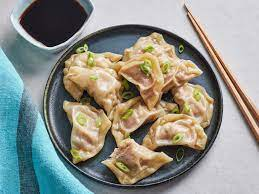

Dumplings

These tasty steamed pork dumplings make a perfect appetizer for a party or you can serve them as a main dish. Serve with hoisin sauce, hot Chinese-style mustard, and toasted sesame seeds.
Un-ordered list of dumpling ingredients:
- Dumplings Wrappers
- pork
- ginger
- garlic
- onion
- soy sauce
- sesame oil
- cabbage
- Soya chunks
Steps needed to make dumplings:
- Make the Filling
- Fill the Dumplings
- Steam the Dumplings